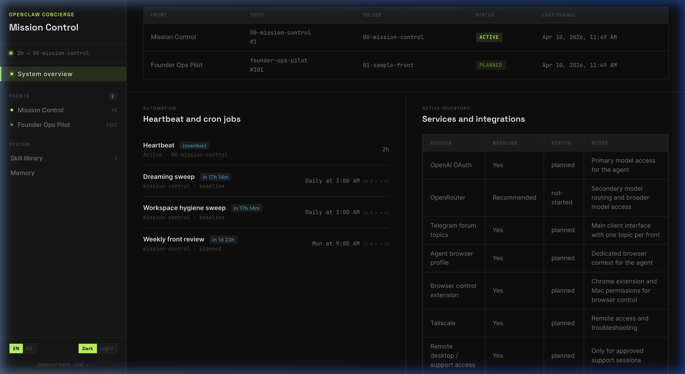

COVER // 01
Your own AI operating system, running on your own machine.
Always on. Always private. Always yours.
COMPARISON // 02
ChatGPT, Gemini, Claude — you open a browser, type a question, get an answer. No memory between sessions. No initiative. No connection to your systems.
An AI agent living on your computer. It has memory, personality, tools, and can act autonomously. You chat via Telegram, WhatsApp, or any channel.
Everything in Level 2, plus a guided setup, structured operating fronts, priority management, a mission control dashboard, and expert configuration.
LEVEL 01 // DETAIL
You open a browser, type a question, get an answer. The model processes your text and returns a response. That's it. No memory, no files, no tools, no initiative. Every session starts from zero.
COMPLEXITY
Zero setup. Zero configuration. Zero operational depth.
YOU
"Help me with my Q4 budget"
Browser interface (ChatGPT, Gemini, Claude)
REQUEST (API)
LLM
Language Model
Processes text input → produces text output
No context about you. No memory of yesterday. No access to files or tools.
RESPONSE (TEXT)
OUTPUT
"Here's a general template for a Q4 budget..."
Generic. No personalization. Ends here.
SESSION ENDS — EVERYTHING IS FORGOTTEN
LEVEL 02 // DETAIL
The LLM is now at the center of a full operating system. Memory, scheduled tasks, tool access, user knowledge, and communication channels all orbit around a single intelligence core running on your own hardware.
COMPLEXITY
Medium-high. Powerful system, but the configuration layer to make it truly useful for a specific person is still missing.
MAC MINI / SERVER — 24/7
TELEGRAM
Forum Topics
Business API
OTHER
Gateways
CORE
LLM Agent Runtime
OpenAI / Gemini / Claude API
MEMORY
daily / wiki
USER.md
identity
SOUL.md
personality
HEARTBEAT
every 2h
CRON JOBS
scheduled
SKILLS
plugins
BROWSER
web control
CLI / TERMINAL
system commands
EXPONENTIAL LEAP IN CAPABILITY
But who configures all of this for your needs?
LEVEL 03 // DETAIL
We don't just install it — we configure it around your real needs, implement your first operating front, and make sure you understand how to expand the system on your own.
WHAT YOU GET
A running system, tailored to your reality, with at least one active front. Plus the knowledge and structure to create additional fronts yourself.
YOU
Your goals, priorities, and workflows
"I need to manage my real estate portfolio and automate reports"
NEEDS & CONTEXT
CONCIERGE LAYER
INTAKE
discover priorities
CONFIGURE
tailor the system
FIRST FRONT
fully implemented
TEACH
expand on your own
OPENCLAW SYSTEM (ON YOUR MAC MINI)
LLM
MEMORY
CRON
TOOLS
SKILLS
FRONTS
HEART
GATEWAY
RESPONDS VIA YOUR CHANNELS
RESULT
A running, personalized agent — with at least one front active and the knowledge to grow.
CONCEPT // 03
The Gateway runs on your Mac Mini. Everything connects to it. Your data never leaves your machine.
Send a message on Telegram
Telegram Forum Topic
Each topic = one operating front
OpenClaw Engine
ws://127.0.0.1:18789 — your Mac Mini
Pi Runtime
Workspace
Wiki + Daily
Browser, Cron
FILES // 04
These markdown files define who the agent is, what it knows, and how it behaves. They live in your workspace folder.
The system prompt. Defines what the agent can do, which tools it can use, and the rules it must follow. This is its operating manual.
The agent's personality and voice. Defines how it communicates: formal or casual, brief or detailed, its name and its tone.
Your profile. Who you are, your preferences, your context. The agent reads this to personalize every interaction to you.
Long-term durable memory. Key facts, decisions, and context the agent should always remember across sessions.
Standing orders. The list of things the agent should always check when it wakes up on its own — like a morning routine.
Nightly consolidation. The agent reviews its day, extracts insights, and prepares context for tomorrow.
SKILLS // 05
Skills are pluggable instruction sets that teach the agent how to perform specific tasks. They live in skills/<name>/SKILL.md.
01 — DEFINITION
Each skill has a SKILL.md file with frontmatter (name, description) and instructions the agent follows.
02 — SCOPE
Skills are global to the workspace. They're available to the agent across all fronts and conversations.
03 — SOURCES
Skills come from three places: bundled (built-in), managed (from ClawHub registry), or workspace (custom, written by you).
/daily-brief
"Send me a summary of my emails, calendar, and pending tasks every morning at 8 AM"
/create-presentation
"Build a slide deck from a rough outline or a set of bullet points"
/research-topic
"Research a subject, compile sources, and write a structured report"
/draft-proposal
"Write a client proposal based on my notes and past templates"
MEMORY // 06
The agent doesn't just chat and forget. It has a layered memory system that persists across sessions.
Durable long-term memory. Core facts, user preferences, critical decisions. Always loaded.
Daily memory files. One per day. What happened today — conversations, decisions, events.
Nightly consolidation. The agent reviews the day, extracts insights, and writes a summary for tomorrow.
Knowledge base. Structured, searchable information. The agent builds this over time from interactions.
AUTOMATION // 07
Both make the agent act without you asking. But they solve different problems.
THINK OF IT AS
A morning routine checklist
Every 2 hours, the agent "wakes up" and reviews a standing list of things to check. It always runs the same checklist — you define what's on it.
WHAT IT READS → HEARTBEAT.md
THINK OF IT AS
Calendar appointments for the agent
Specific tasks that happen at exact times. "Every Monday at 9 AM, write a weekly report." "Every night at 3 AM, consolidate memory."
EXAMPLES
Dreaming sweep
Consolidate today's memory into insights
Weekly front review
Generate status report per front
FRONTS // 08
Every area of your life or work becomes a front — a dedicated stream with its own conversation, files, and context. You start with one and grow from there.
YOU
Your life & work
WORK
Real Estate Ops
Property management, contracts, tenant communication
PROJECT
Marketing Campaign
Content calendar, copy drafts, analytics reports
PERSONAL
Family & Admin
Appointments, school, household logistics
FINANCE
Investment Portfolio
Market research, position tracking, weekly reports
SIDE PROJECT
Podcast Production
Guest research, scripts, episode notes
Add a new front
whenever you need one
INTERFACE // 08B
You don't need a new app. Telegram is your human-to-agent gateway. Each topic is a direct line to a specific front's context.
SYSTEM ARCHITECTURE
One Topic per Front
Telegram Topics act as the isolated "chat rooms" for each project or life area.
Mapped Project Folders
The system links your Telegram Topic ID to a physical folder on your Mac Mini disk.
Automated Context Loading
When you type, the agent loads FRONT.md and PROJECT.md instantly.
NO "CONTEXT PROMPTING"
Unlike a standard chatbot, you never have to remind the agent what you're working on. The topic *is* the context.
YOU SEND A MESSAGE
"Summarize the latest lease terms from the real estate folder."
DETECTION & ROUTING
Gateway detects Topic ID → Loads matching files from your local disk.
AGENT EXECUTION
It cross-references your current goal with your history and tools.
Response sent back to the same topic in seconds.
HARDWARE // 09
Your AI lives on a dedicated machine. Always on, always local, always private.
ALWAYS ON
The Mac Mini runs 24/7 with the lid closed (it has no lid). The agent is always available.
LOCAL FIRST
Your data stays on your machine. Memory, files, and workspace never leave your network.
REMOTE ACCESS
Tailscale lets you access the dashboard and control the agent from anywhere, securely.
WORKSPACE ON DISK
All config files (SOUL, USER, MEMORY, fronts) are plain markdown on the filesystem. You can edit them with any text editor.
NODE.JS GATEWAY
The Gateway is a lightweight Node.js process. Low resource usage, fast startup. Runs on port 18789.
HEADLESS MODE
No monitor needed. The Mac Mini operates headless. The agent interacts through Telegram, not a screen.
CONCIERGE // 11
OpenClaw is the engine. We are the operational intelligence on top.
WHAT WE DO
Guided setup
Preflight checklist, intake interview, baseline configuration
Front structure
Create operating fronts, map to Telegram topics, set up canonical folders
Priority management
Priority matrix, backlog management, next-action identification
Mission Control
Visual dashboard for system health, front status, and file management
WHAT OPENCLAW DOES (ALONE)
Raw agent runtime
You install it, configure everything manually, and troubleshoot alone
Flat workspace
No front structure. All conversations in one place. No prioritization.
No dashboard
CLI only. No visual system health. No front management UI.
No guided onboarding
You read the docs and figure it out. No intake, no priority matrix.
DASHBOARD // 12
A visual dashboard designed for humans — not engineers. See your fronts, automations, files, and system health at a glance. No command line needed.

Mission Control V2 — running on your Mac Mini at 127.0.0.1:4177
AT A GLANCE
See all your fronts, their status, and last activity in one table.
AUTOMATION
Monitor your heartbeat and cron jobs. See when each one runs next.
FILE EDITOR
Edit your operating files directly from the browser. No terminal needed.
SKILL LIBRARY
Browse and inspect all installed skills with full documentation.
OpenClaw's native interface is a CLI terminal. This dashboard is part of the Concierge layer — built for clarity.
REALITY CHECK // 13
AI is the new frontier. It is powerful, but it is not magic. It requires a balanced approach between trust and oversight.
A MOVING TARGET
The industry is in its infancy
Everything is changing constantly. Models (GPT, Claude) are updated monthly. Open-source systems like OpenClaw evolve weekly. Sometimes, updates break things. Models occasionally hallucinate or fail to follow logic.
OUR ROLE
We handle the technical friction. You shouldn't have to navigate this uncertainty alone. When something breaks or changes, we are there to recalibrate and fix.
THE MANDATE
Human in the Loop
This is a collaboration, not an abdication. Decisions regarding your **finances**, your **reputation**, or **outward-facing communications** should never be left entirely to an agent.
Review critical emails before they are sent.
Verify financial summaries and reports.
**The human always takes the last decision.**
TRUST BUT VERIFY
CLOSE
One Mac Mini. One agent. One structured workspace.
Every front organized. Every task tracked. Every decision remembered.
Built on OpenClaw · Concierge Service